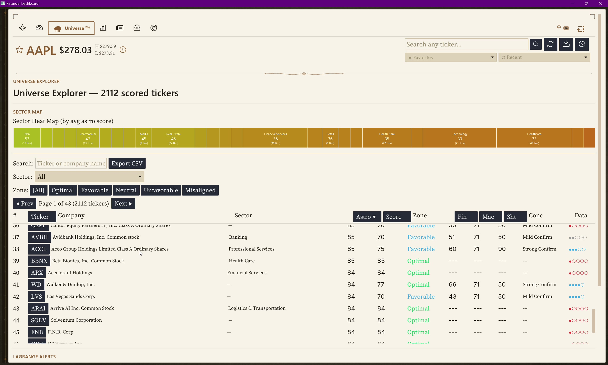
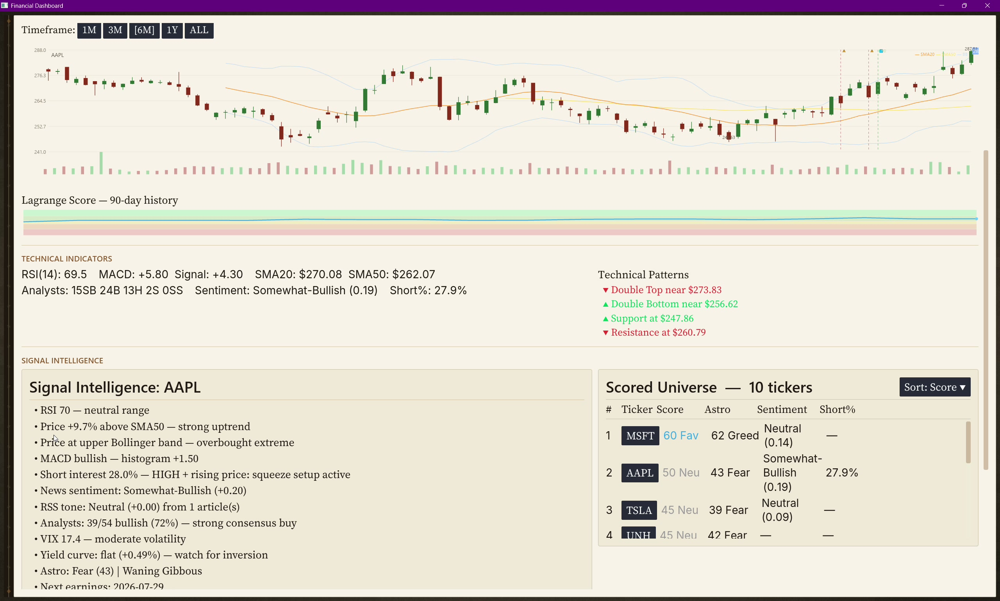
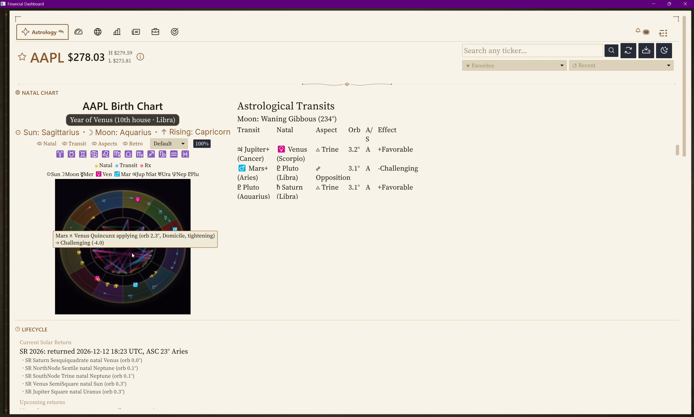
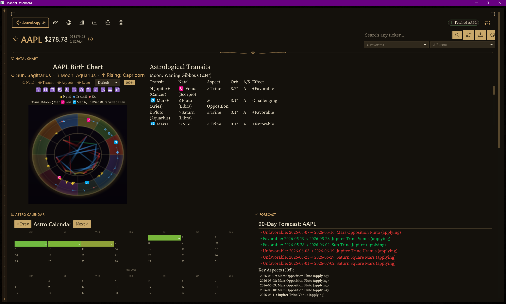
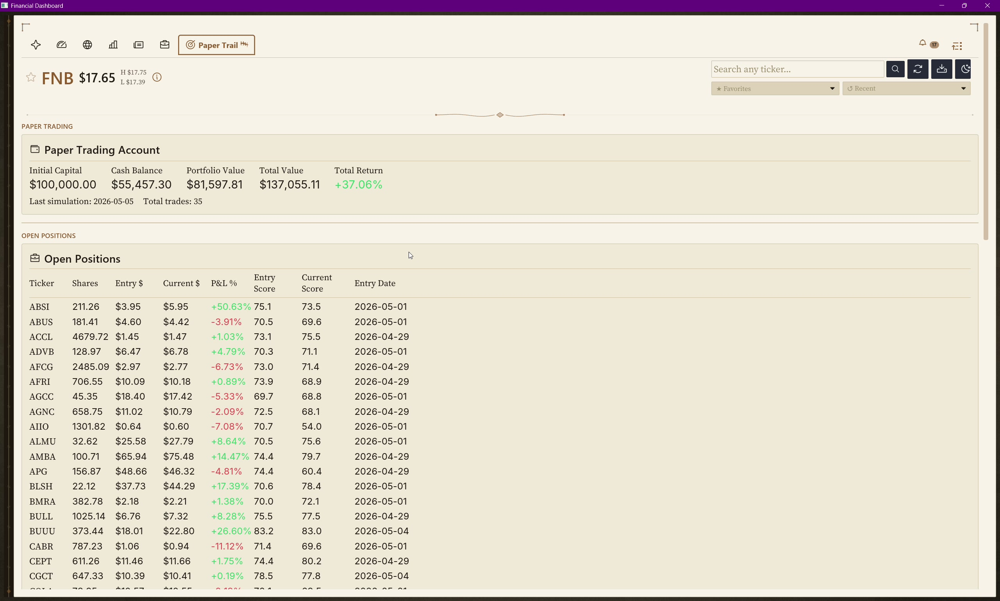
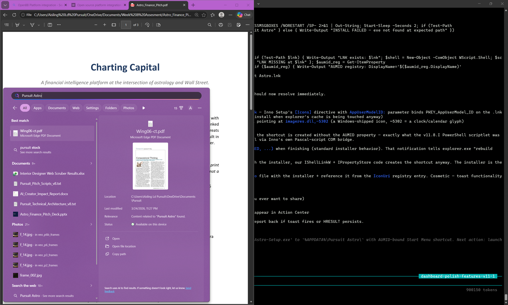

01 / 12
0:00 — 0:40 · 40s
Nisaba Capital Charting
A financial intelligence platform at the intersection of astrology and Wall Street.
"Millionaires don't use astrology. Billionaires do."
— attributed to J.P. Morgan
Whether or not he said it, what is documented: Morgan kept the most famous astrologer in America, Evangeline Adams, on retainer for investment advice.
This intersection isn't fringe. It's hidden. I'm Aisling. I believe in astrology. So I built the tool these guys had to invent themselves.
Aisling Leiva · Pursuit NYC Fellowship · Final Presentation
Open with the quote. Pause 3s. Then the hedge: "whether or not he said it, what's documented…" Land on Adams' retainer. Drop the closing tag: "Not fringe. Hidden. I'm Aisling. I believe in astrology. So I built it." Pace: 130 wpm. Slower than instinct.
02 / 11
0:25 — 1:00 · 35s
The Lineage
This intersection isn't fringe. It's hidden.
Astrology and finance have been intertwined for over a century. Verified figures, verified facts:
| J.P. Morgan | 1890s-1913 | Kept astrologer Evangeline Adams on retainer for investment advice. Adams' 1926 autobiography documents the relationship. |
| W.D. Gann | 1908 | Founded W.D. Gann & Company. Built planetary-cycle trading system. Truth of the Stock Tape (1924) praised by Wall Street Journal. |
| Donald Bradley | 1948 | Stock Market Prediction. Bradley Siderograph — planetary index for stock turning points. Still tracked today. |
| Arch Crawford | 1977-present | Founded Crawford Perspectives. Predicted 1987 crash to the day. Ranked #1 market timer in 2008 and 2009 by Hulbert Financial Digest. |
Existing tools serving this market are PHP scripts and Python notebooks. Newsletters charge $1,200/year. The market exists. The production-grade platform doesn't.
Walk 3 names: Morgan, Gann, Crawford. The Crawford line is the strongest — "ranked #1 market timer in America 2008 and 2009 by Hulbert Financial Digest." Hedge Morgan as "attributed." Land on the gap: market exists, no platform.
03 / 11
1:00 — 1:25 · 25s
What It Is
Nisaba Capital Charting · three tiers, three audiences, one engine.
Free
For the curious. View any ticker's natal chart + Lagrange score.
Pro
For paper traders. Full backtest + auto-trading sim. +37% ROI verified.
Master
For professionals. Sidecar API + OpenBB Workspace integration.
Astrology engine
Wave 9 · 9 modules · 65 tests
- Solar Returns (Newton search)
- Profections (Hellenistic time-lord)
- Planetary returns (Saturn/Jupiter/Mars)
- Secondary progressions
- 9 aspects · 7 patterns · 8 fixed stars
- Decans · Sabian Symbols · Eclipses
- NASA-grade Swiss Ephemeris
Data pipeline
Wave 7 · 10 native providers
- World Bank · IMF · ECB SDMX
- BLS · EIA · CFTC COT · OFR FSI
- Treasury Direct · CoinGecko · SEC EDGAR
- + Tiingo · Alpha Vantage · Finnhub
- + GDELT · Polymarket · 25 RSS feeds
- SQLx compile-time SQL
- Tiered priority refresh queue
Desktop GUI + sidecar
Iced 0.14 · wgpu · axum
- 3D natal wheel via WGSL shader
- Universal pill notification system
- Lagrange composite (6 factors)
- Backtest with cycle-aligned mode
- Paper trading engine
- OpenBB Workspace integration
- 11 REST endpoints + 7 widgets
Three columns = three binaries. Read the column headers, then the bold "what" line under each. Don't list the bullets aloud — let the audience eyes do that work while you talk about scope.
04 / 11
1:25 — 1:50 · 25s
Walkthrough · Step 1
Open the dashboard. Universe tab. 2,072 scored tickers.
▶ Workflow demo
What you're seeing
Sector heat map at top — color-coded by average astro score. Green = optimal, orange = unfavorable.
Below: 2,072-ticker scored universe table. Sortable by Astro, Lagrange Score, Concordance, sector, fundamentals.
Each row's Conc column shows how many of the 6 Lagrange factors agree — that's the high-conviction signal.
Click any ticker → full detail view loads in < 200ms.

Point to the sector heat map first ("color-coded by average astro score"). Then sweep right to the table. Highlight the Conc column ("when 4+ factors agree, that's the high-conviction signal"). Click intent: pick CGCT or any optimal-zone ticker.
05 / 11
1:50 — 2:20 · 30s
Walkthrough · Step 2
Overview tab — six factors converge into one Lagrange score.
▶ Workflow demo
5 gauges, top-aligned
Left to right: Crypto F&G, Equities F&G, Technical, Astrology, ★ Lagrange composite.
The candlestick chart below has Bollinger Bands, SMA-20, SMA-50, volume bars, technical patterns auto-detected (double tops, support/resistance lines).
The thin band beneath is the 90-day Lagrange history — green = bullish concordance, orange/red = bearish.
Lagrange = Tech 20% + Sentiment 20% + Short 15% + Insider 15% + Astro 15% + DCF 15%

Sweep across the 5 gauges left-to-right. Land on the Lagrange star. "This is the composite — six independent signals." Then point to the 90-day history strip. "When this stays green for weeks, that's structural bullishness, not noise."
06 / 11
2:20 — 3:00 · 40s
Walkthrough · Step 3
Astrology tab — where this gets serious.
▶ Workflow demo (the hero shot)
Year of Venus badge
AAPL is currently in its Year of Venus (10th house · Libra) — Hellenistic profection has rotated Venus into time-lord position.
Hover the badge → full plain-English explanation: profection method, age, house meaning, lord flavor, +50% Lagrange weight.
3D natal wheel
Real-time WGSL shader. 13 bodies tracked. Aspect lines glow by orb-tightness gradient (v9.0 visual upgrade).
Hover any planet
Tooltip reveals decan, Sabian symbol per degree, critical-degree flag, OOB declination.
Lifecycle below
Solar Return, Saturn / Jupiter / Mars upcoming returns, progressed Sun position. All cached — zero per-render compute.

This is the money slide. Slow down. "AAPL is in its Year of Venus right now — that's not a number I made up. It's a 2,000-year-old Hellenistic technique." Hover the badge to show the tooltip. Mention Antiochus's first-century text. Then the wheel: "rendered in real-time on the GPU via custom WGSL shader."
07 / 11
3:00 — 3:25 · 25s
Walkthrough · Step 4
Universal pill notifications + drawer history.
▶ Workflow demo
Three pills, three signals
ACLS → Optimal · MSFT → Optimal · NVDA → Optimal — all Lagrange alerts firing simultaneously.
Layout never reflows. Pills slot between the tab strip's right spacer and the bell button. The fix from v12.1 — kill the push-down bug forever.
Click any pill → routes to Universe tab + dismisses pill in one click.
Click the bell → drawer reveals 24h history. Clear all = wipe both active deque + history.
Bell rocks 2.4s when active count > 0. Custom Canvas widget — no Phosphor codepoint guessing.

Quick on this slide. "Three Optimal alerts firing at once — layout never moves. That's intentional engineering. Click any pill, it routes + dismisses. Click the bell, full 24-hour history." Move on.
08 / 12
3:25 — 3:55 · 30s
The Proof
+37.06% return on $100K virtual capital. 35 trades. Live forward-test.
Live paper trading engine
Starts with $100,000 virtual capital. Auto-opens at Lagrange score > 65, exits at < 35 or 15% trailing stop.
Total Value: $137,055.11
Total Return: +37.06%
35 trades · last simulation 2026-05-05
Open positions visible: ABSI +50.63%, BLSH +17.39%, AMBA +14.47%, BUUU +26.60%.
Astrology is one of six inputs. The Lagrange strategy that produced this return uses it actively. Not cherry-picked from history — running every day on real data.

Kill shot. Slow down. "$100,000 virtual capital. Plus thirty-seven percent return. Thirty-five trades. The Lagrange strategy uses astrology as one of six inputs." Pause. "This isn't a backtest cherry-picked from history. It's a live forward-testing engine."
09 / 12
3:55 — 4:15 · 20s
The Thesis
Don't believe. Measure.
The thesis isn't "believe in astrology." The thesis is — financial astrology has a documented 100-year track record at the highest levels of Wall Street. Until now, the techniques weren't reproducible at scale.
Nisaba Capital Charting is the first open implementation of Hellenistic financial astrology with engineering rigor: NASA-grade Swiss Ephemeris precision, 132 unit tests validating against AAPL's natal chart, a backtest engine with cycle-aligned mode that filters days by Saturn-return / Jupiter-return zones.
Don't take J.P. Morgan's word for it. Don't take W.D. Gann's word for it. Run the backtest yourself.
Slow down here. This is the philosophical pivot. "The thesis isn't believe — it's measure." Pause. Let it land. Then close: "Run the backtest yourself."
10 / 12
4:15 — 4:35 · 20s
Tech Depth
30 days. Solo. Production-grade.
- Compile-time SQL — SQLx verifies every query at build time. Wrong SQL = won't compile.
- GPU-native rendering — Iced 0.14 + wgpu, not Electron. Single 12MB binary.
- Sub-arcsecond ephemeris — Swiss Eph + Moshier fallback. Same lib NASA uses for spacecraft.
- Fail-soft pipeline — Any provider failure logs and continues. No cascading outages.
Read the numbers fast in sequence — they hit harder rapid. End on "zero compiler warnings." That's the engineering credibility punch.
11 / 12
4:35 — 4:55 · 20s
What This Could Be
Nisaba Capital Charting — the platform play.

Nisaba Capital Charting is the engine. Nisaba Capital Charting is the brand — a financial intelligence platform at the intersection of astrology and Wall Street.
The infrastructure is already production-tier. The question isn't can it ship. The question is what audience first:
- ▸ Retail traders — desktop tier ($29/mo)
- ▸ Institutional newsletters — sidecar API ($1,200/yr precedent)
- ▸ Astrology-curious finance professionals — the W.D. Gann tradition revived
Bring the brand into focus here. "Nisaba Capital Charting is the engine. Nisaba Capital Charting is the brand." Three audiences = three monetization paths. Don't dwell — this is forward-looking, not prescriptive.
12 / 12
4:55 — 5:00 · 5s
"The stars charted the careers of Morgan,
Gann, and Crawford. They're charting mine too.
And I'm building the tool that charts
everyone else's."
Whether you came for the horoscope or stayed for the P&L,
the cosmos has been moving markets the whole time.
We're just the first to put it on one screen.
Aisling Leiva · Nisaba Capital Charting · Thank you
Memorize verbatim. Deliver slow. Final beat: "We're just the first to put it on one screen." Pause. Smile. Take questions. Don't say "thanks for listening."